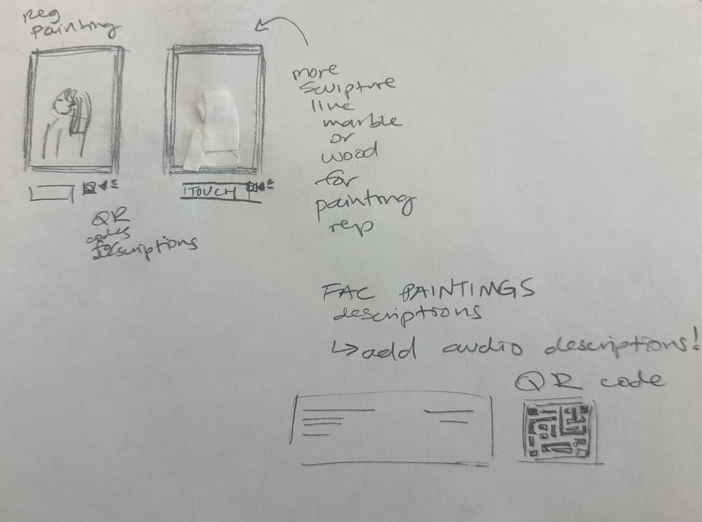
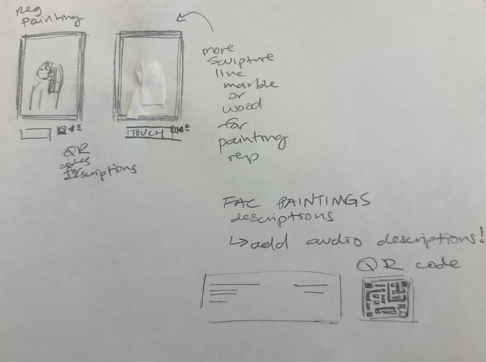
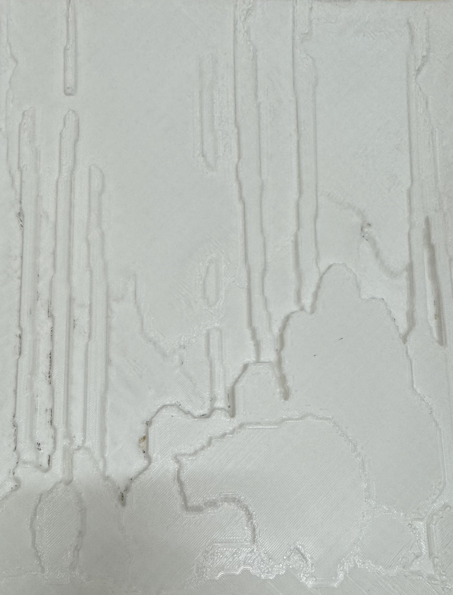

Black Bears in Aspen Through Multiple Modalities
By Dylan Shryer, Primera Hour, Judy Gonzalez, and Jimmy Andrews
Overview
Our project provides an accessible, multimodal art experience for William Herbert "Buck" Dunton's painting, Black Bears in Aspen. In this part of the Fine Arts Center, visitors with visual disabilities are able engage through touch, sound, scent, and descriptive language. Features include a tactile replica of our painting, an accompanying scent that reflects the artist's theme, an ambient soundscape enhancing the mood, and an audio narration explaining what the art entails. Visitors can also access written descriptions in both Braille and large print, along with a texture key that maps elements to parts of the painting. Overall, this immersive setup promotes deeper, more inclusive engagement for all users.

Audio Description
Background Sounds
Needfinding
We read and watched 4 academic research papers, 3 online articles, and 1 YouTube video for our needfinding process. We then created an affinity diagram using the needs that we discovered in our research. The affinity diagram categorizes the needs into larger groups.
Affinity Diagram
Appreciating Art Through Multiple Modalities
Scented Feedback
- No universally used scents to communicate color
- Scented feedback to connect via emotions
Audio/Scented Cues
- No universally used sounds to communicate color
- Need to understand locations of scents
Tactile Exploration
- Tactile paintings are rare to come across
- Tactile patterns don't feel artistic to users
- Even tactile graphics are difficult to interpret, especially if the images are complex
- People born blind haven't seen color
- Tactile paintings can take a while to feel
- Art is mainly explored through touch, but not other avenues
- Tactile graphics and may need to avoid Braille use, as it requires previous experience/training
- Need for print materials with larger text
- Tactile exhibitions
- The design model for the tactile should be simple and abstract enough for easy understandability, while also not avoiding oversimplification of the art
- Reliance on the sense of touch when blind bc it drives tactile-acuity enhancement
- Need to understand locations of colors
- Those who are proficient Braille readers have more sensitive fingers than sighted people
- Need to know tones of colors
- Colors need to be dramatic
Multi-sensory Art Reproduction
- Multi-sensory can be overstimulating
- People's preferences of sense vary in understanding color
- Interactivity with the painting is often limited, making it difficult for those that are blind/with low vision to have a fully immersive experience
- Multi-sensory displays
- Wants multiple options to describe artwork
- Need to develop an ethos whereby inclusion of people with disabilities is standard practice throughout the organization
- Person describing painting might not be adequately trained
- Need for “appreciation aids” to enjoy works of art at the level of weak synesthesia
- Combination of tactile graphics, interactive interfaces, and audio descriptions
Inaccessible Art Descriptions
- Need to train museum staff in audio description and visual awareness
- Limited availability for more information and questions
- Inconvenient to have someone describe a painting
- Need for audio descriptive guides
- Verbal explanations not well-liked
- Automatic computer vision is not good for descriptions
- Audio descriptions are usually made for sighted people so the descriptions are not in depth
Lack of Anatomy based on Museum Options
- Need to book in advance to have someone describe paintings
- Blind people want to be able to experience art themselves
- Need to make collections in museums more accessible
- Accessible tours/workshops are available only at specific dates, and usually must be reserved in advanced
Art Experience Barriers
- Want to be relaxed while experiencing art
- Wants cohesive information to interpret the artwork
- Wants unique, defining aspects about paintings
- The amount of external devices and software required to experience a painting can become excessive
Navigation Barriers
- Wants to feel connected to environment
- Navigating art venues can be hard
Advocacy
- Expand appreciation assistance for art work
- Wants to improve visibility of blind people in art museums
Ideation
Based on the categories from our affinity diagram, we each made 2 divergent sketches containing potential solutions to some or all of the identified needs. Finally, we combined the best ideas from our divergent sketches into one convergent sketch.
Divergent Sketches
 

Convergent Sketch
Storyboard
![A storyboard of our project's experience. Starting from the top left there is a drawing of a person with visual impairments visiting the
Fine Arts Center and walking through the exhibits. The next drawing depicts the person in front of an artwork with a table containing multiple modalities. The next drawing shows
a close up view of the table with a 3D model of the painting, a box with scents, a speaker, and a legend of textures in the 3D model. The next image depicts the person touching the
tactile 3D model as sounds play. The next image shows the person smelling the scents in the box as associated sounds continue to play. The last drawing shows the person walking away
happy having experienced the painting with multiple modalities](media/storyboard.jpeg)
Our Solution
Following our convergent sketch, we created an initial prototype of the 3D model. The input we received from the testers of our prototype led us to decide to put the textures on top of the model along with them being in the legend.
Prototype
Final Model
Finished Project
Design Choices
Our design principles were informed through the wants of people who are visually impaired through our research. We decided to create a multi-modal experience for a plethora of reasons. Multiple studies say that they want multiple options to experience art, to have the autonomy to experience it themselves, to have a fully immersive experience, and to explore art through other avenues besides tactile pathways, especially since people have their preferences (Cho, 2021, Maćkowski et. al, 2023, Mingzhe Li et. al, 2023). We chose to make a 3D printed version of Dunton’s painting. People have reported that tactile graphics are difficult to interpret, especially if the paintings are complex (Maćkowski et. al, 2023) which is why we decided to add texture on the 3D painting to make it easier for blind people to identify what each object is. Furthermore, we are addressing the issue that tactile paintings are rare to come across (Mingzhe Li et. al, 2023) by making a tactile version of our painting. We are creating an audio descriptive guide specifically made for people without sight (Mingzhe Li et. al, 2023). There is also a smell of the environment of the painting as well as sound of the environment for a more immersive experience (Cho, 2021). This addresses other issues such as tours being available only at specific times and days (Maćkowski et. al, 2023, Mingzhe Li et. al, 2023). By having this information constantly present in front of the painting, it gives blind people autonomy and it makes it more defining for blind people to remember the paintings (Maćkowski et. al, 2023, Mingzhe Li et. al, 2023).
Demo Video
References
- Cavazos Quero, L., Lee, C.-H., & Cho, J.-D. (2021). Multi-Sensory Color Code Based on Sound and Scent for Visual Art Appreciation. Electronics, 10(14), 1696. https://doi.org/10.3390/electronics10141696
- Cho, J. D. (2021). A Study of Multi-Sensory Experience and Color Recognition in Visual Arts Appreciation of People with Visual Impairment. Electronics, 10(4), 470. https://doi.org/10.3390/electronics10040470
- Franklin Mingzhe Li, Lotus Zhang, Maryam Bandukda, Abigale Stangl, Kristen Shinohara, Leah Findlater, and Patrick Carrington. 2023. Understanding Visual Arts Experiences of Blind People. In Proceedings of the 2023 CHI Conference on Human Factors in Computing Systems (CHI '23). Association for Computing Machinery, New York, NY, USA, Article 60, 1-21. https://doi.org/10.1145/3544548.3580941
- Michał Maćkowski, Piotr Brzoza, Mateusz Kawulok, Rafał Meisel, and Dominik Spinczyk. 2023. Multimodal Presentation of Interactive Audio-Tactile Graphics Supporting the Perception of Visual Information by Blind People. ACM Trans. Multimedia Comput. Commun. Appl. 19, 5s, Article 167 (October 2023), 22 pages. https://doi.org/10.1145/3586076
- "CSUN 2024: B.fter Aroma Art for Visually Impaired People" YouTube, uploaded by nosillacast, 23 May 2024, https://www.youtube.com/watch?v=tjGLmzxN2M8.
- Beete, P. (n.d.). Touch and see. National Endowment for the Arts. Retrieved from https://www.arts.gov/stories/magazine/2015/1/challenging-notions-accessibility-and-arts/touch-and-see
- Gipson, F. (26 Mar. 2019). Art Matters podcast: how blind and partially sighted people engage with visual art. Retrieved from https://artuk.org/discover/stories/art-matters-podcast-how-blind-and-partially-sighted-people-engage-with-visual-art
- Reynolds, C. (1 Jul. 2020). Seeing Without Seeing: Visual Art from a Blind Artist. Retrived from https://blindnewworld.org/seeing_without_seeing_visual_art_from_a_blind_artist/